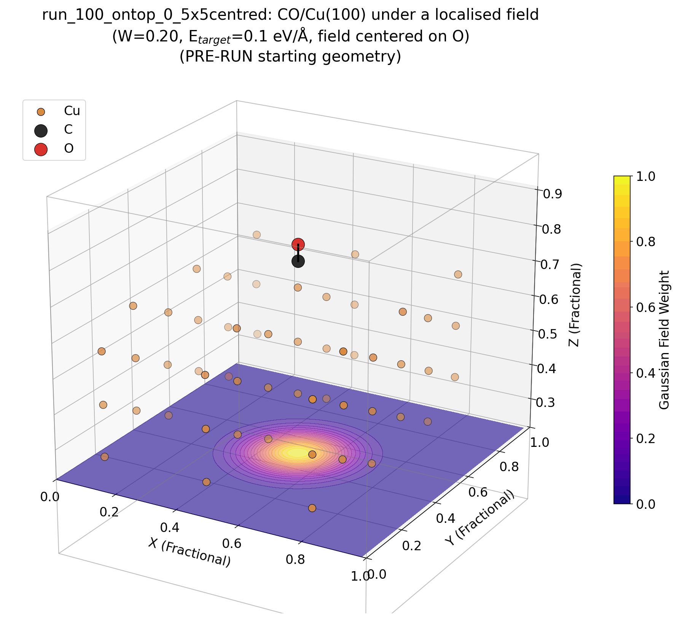

Aritri Roy
I study how electric fields at electrochemical interfaces reshape adsorbate bonding, using first-principles DFT and simple analytic models (Newns–Anderson chemisorption theory) to connect atomistic electronic structure to measurable reactivity trends. Currently a PhD candidate at IIT Bombay.

Featured project

Field effects on CO chemisorption on Cu(100)
How localized electric fields of varying width and position change CO binding at ontop and bridge sites, decomposed into hybridization, orthogonalization and electrostatic contributions with a Newns–Anderson $d$-band model.
Read the case study →About
[Write 2-3 short paragraphs here: your research focus, the broader question you care about, your academic background (BTech/MTech/PhD institutions and years), and what you're looking for next (postdoc, industry, collaborations).]
[Optional: a line about outside-of-research interests to make the page feel personal.]